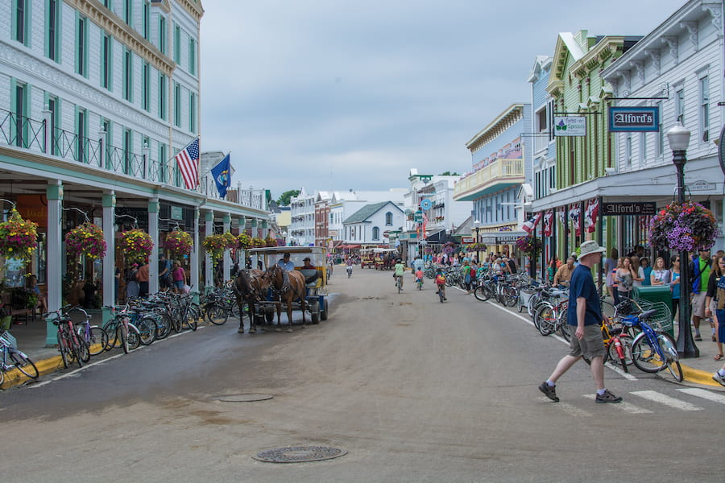

My favorite city is Mackinac Island. It's a small island located in Michigan. This island has banned all motor vehicles. You can only travel by walking, riding bikes riding horses, or use horse-drawn carriages. The island is also famous for its homemade fudge and the 1980 movie "Somewhere in Time" was filmed at the Grand Hotel.
